26 марта, понедельник
Проснулись, растопили бурбулятор ветками шиты, поели, попили чайку и еще раз полюбовались на красоту этого места. При свете солнца оно оказалось даже не хуже чем при луне. Развалины не особо впечатлили, но можно представить их назначение в прошлом - небольшое укрепление на перекрестке крупных караванных троп.
Автомобильные джиповки и сейчас идут по дну этих нахлей, в точности повторяя дороги тысячелетней давности, но мы не ищем легких путей. Наш трек лежит по козьей тропе вверх и далее вдоль обрыва. В качестве награды - отличные виды.
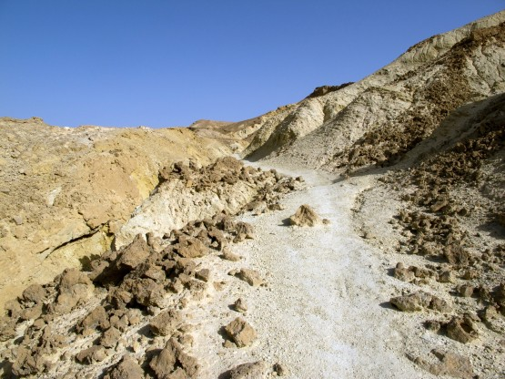
Козья тропа
Козья тропа сменяется джиповкой и еще через пару километров мы уже в кратере Рамон. Торопились мы сюда не зря. Три последних дня здесь на бедуинской стоянке жили Игорь Скорубский и ребята с velik.org, вернее днями они катали радиальные маршруты, а ночевали в этом кемпинге. Такая у них интересная трехдневная покатушка на Пейсах. Очень хотелось увидеться, поговорить и даже покататься вместе, но вчерашняя засада с автобусами внесла коррективы в наши планы. Теперь хотелось хотя бы успеть увидеться, до их отъезда и это нам удалось.
Мы приехали на стоянку немного раньше возвращения ребят из очередной (завершающей) покатушки. Мы успели только сходить умыться, как приехала шумная компания и начала активно собираться и снимать лагерь. В прошлом отчете по израильскому походу ВелоХанука я уже писал об удивительном радушии и гостеприимстве этих людей, тем приятнее сказать, что ничего не изменилось. Ребята опять накрыли для нас стол, накормили, напоили и спать бы уложили да им пора было уезжать.
Жаль мало времени осталось на разговоры, конечно, нужно было приехать вчера вечером, но увы - мы не дотянули.
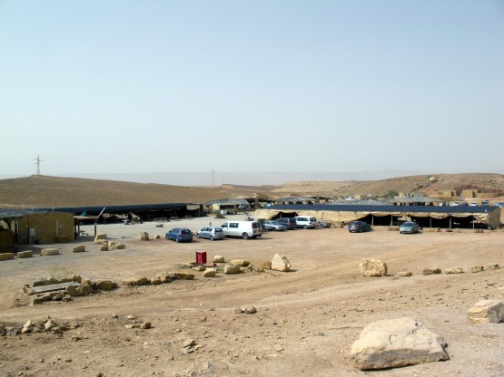
"бедуинская" стоянка
Игорь поделился со мной камерой заправленной джифой, за что ему огромное спасибо, мне стало значительно спокойнее.
Андрей решил воспользоваться предложением и подкинуться в сторону Бен-Гуриона к Средиземному морю. Ему еще нужно было смотаться в Иерусалим к дяде Вове за оставленными там лишними вещами, да и обратный самолет у него на день раньше.
Ну а я собрался и продолжил путь, теперь уже один. На прощание Игорь и компания надавали мне кучу еды с собой, хорошо, что я не стал отказываться, но об этом позже.
Небо опять заволокло пылью и сильный южный ветер равномерно дул мне в лицо. Хорошо, что в этот раз пыльная буря не была такой плотной и даже позволила сделать несколько красивых фотографий внизу кратера.
Закат в кратере Рамон
Встречный ветер сильно замедлил продвижение и до дальней оконечности кратера и к маале я подъехал уже в сумерках. Подъем оказался не из простых. С трудом затащил велосипед, но рюкзак снимать не стал. Наверх выехал уже в полной темноте.
То ли с наступлением темноты ветер стал крепче, то ли наверху он и был таким, но дуло здесь весьма прилично. Хорошо, что теперь мой путь лежал по ветру. Останавливаться в чистом поле не хотелось, тем более что вместо палатки у меня теперь была только экспериментальная модель бивачного мешка из парашютной ткани (собственное производство). К счастью довольно скоро попалась небольшая сосновая роща с искусственным поливом. На ее опушке и раскинул свою недопалатку, предварительно закипятив в бурбуляторе чайку. Кстати, бурбулятор отлично работал даже на таком сильном ветру.
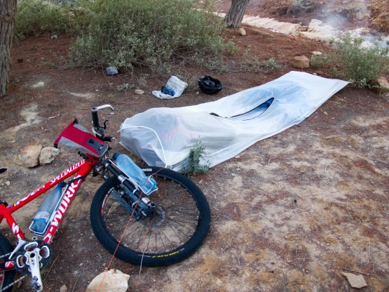
Недопалатка
Что касается недопалатки, то и она показала себя исключительно хорошо в эту ночь. Внутри было значительно теплее и ветер практически не проникал. Если учесть ее вес в 300 грамм и очень малый объем, то становится понятно, почему я остался столь довольным своим изобретением. Если честно, то я даже не ожидал такого эффекта. Задумка была в защите от насекомых, скорпионов, змей и прочего что может заползти или залететь в спальник при ночевке без палатки, но бонус в виде дополнительного тепла и ветрозащиты оказался очень кстати.
Дневной пробег 45 км, набор высоты 991 метров
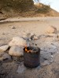 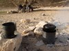 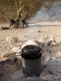 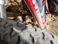 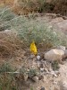 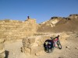 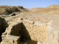 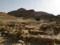 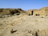 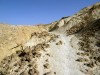  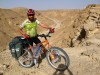 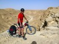 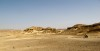 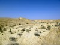 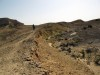 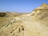 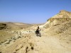 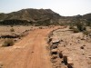 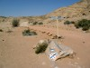 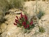 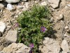 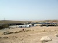 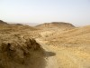 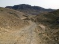 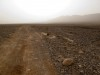 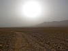 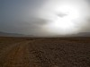 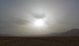 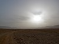 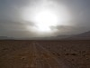 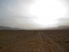 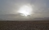 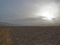 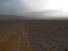 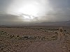 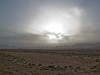 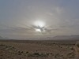 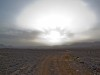
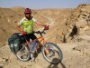 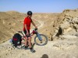 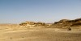 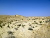 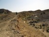 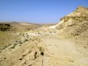 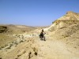 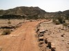 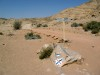 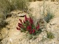 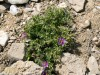 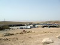 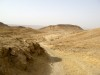 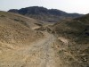 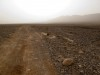 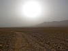 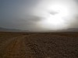 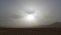 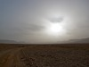 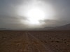 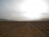 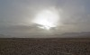 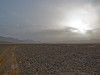 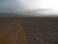 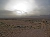 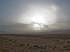 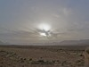 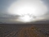  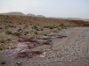 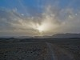 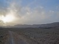 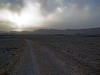 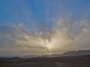 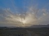
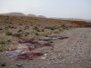 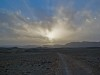 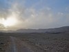 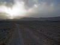 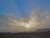 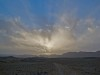
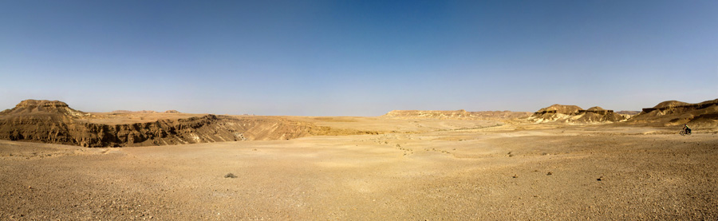
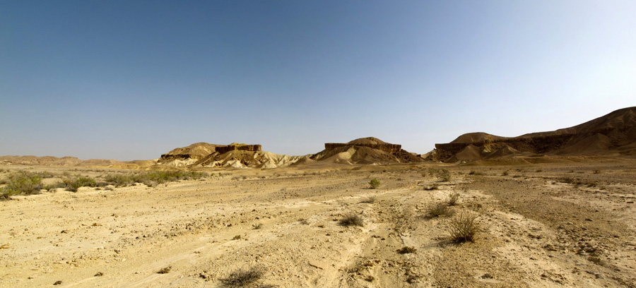